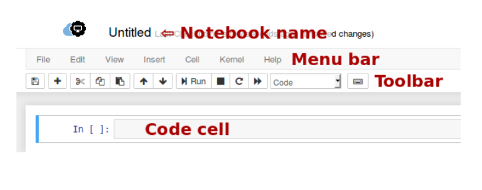

Familiarizing Yourself with Notebook itself¶
If you create a new notebook or open an existing one, you will be taken to the notebook user interface that looks like the following:
{kind=link}
Notebook name is indicated by the word ‘Untitled’ at the top of the page and can be changed by clicking the text.
Checkpoint shows the time when your notebook was saved last.
Menu bar presents different options that may be used to manage the notebook functions. You can download the notebook (in multiple formats), open a new notebook, edit the notebook, customize the headers, manipulate cells, access help and so on.
Toolbar provides performing the most-used operating within the notebook such as save the notebook, add a cell, cut, copy to manipulate cells, up and down to navigate between cells, run to execute the cell, etc
Kernel shows the current kernel associated with the notebook. In our case, the kernel is Python 3. The status of the kernel is indicated by the circle beside the kernel. The hollow circle means that it is ready to take input and run a cell. When a kernel is executing code or processing anything, it changes to solid.
Code cell is the default type of cell. Cells are explained in detail in the following section.